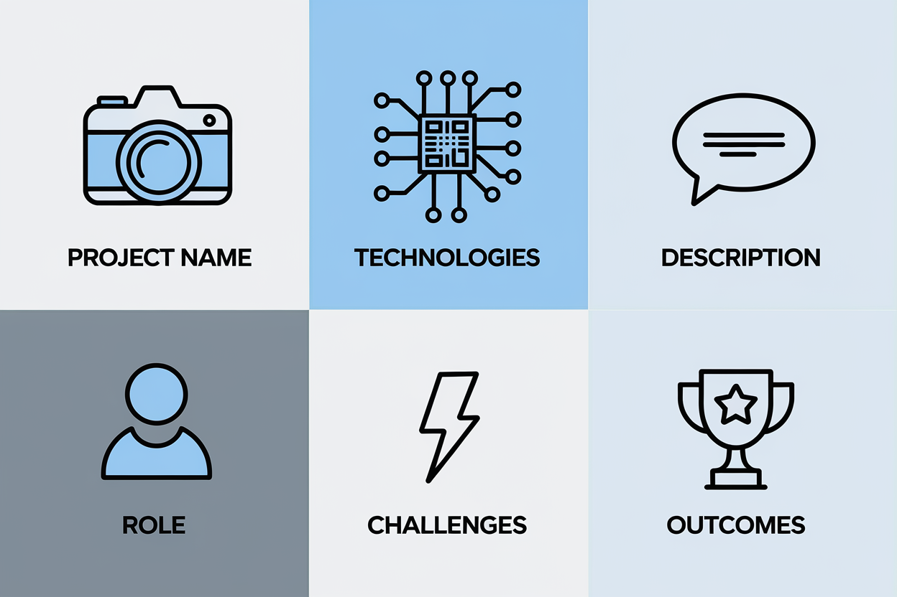
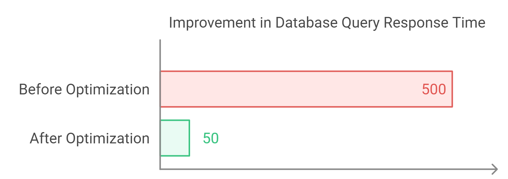
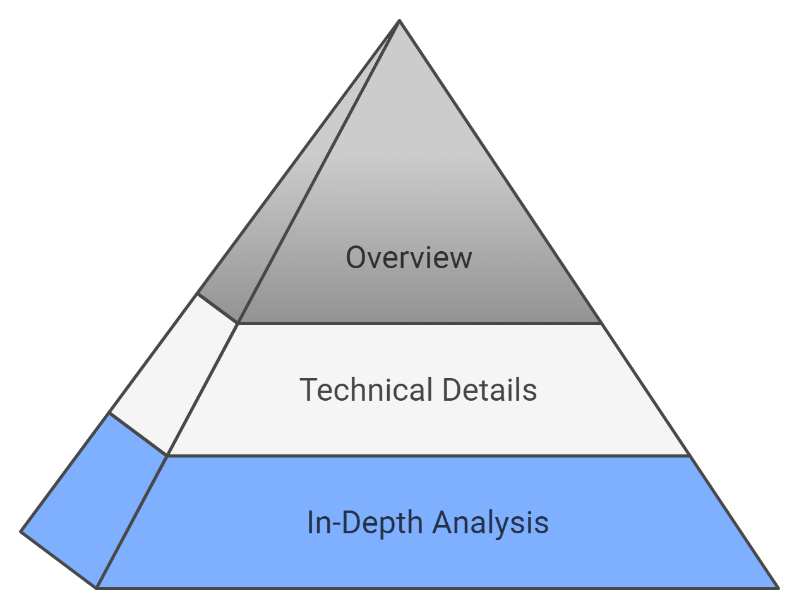
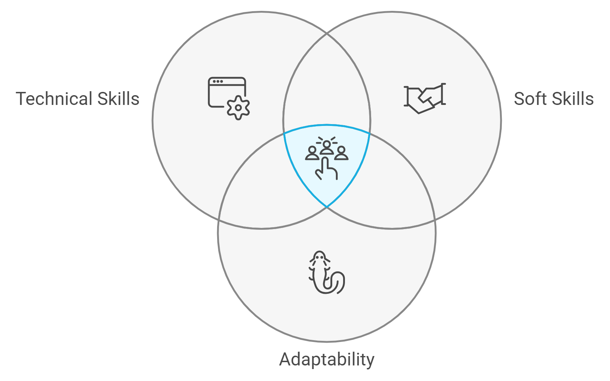
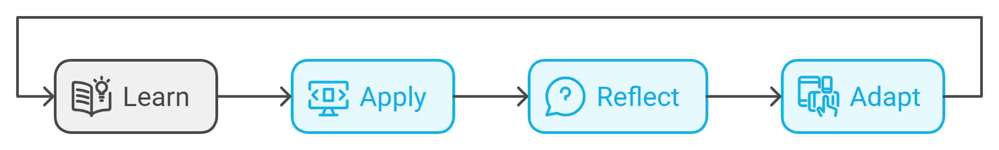

Chapter 4: Showcasing Technical Expertise in the AI Age
Welcome back, STEM superstars! In the last episode, we learned how to craft an AI-optimized resume. Now, it's time to flex those technical muscles and turn your technical expertise into resume rocket fuel.
In the competitive landscape of STEM careers, effectively communicating your technical expertise is crucial. It's like trying to explain quantum physics to your dog – tricky, but not impossible with the right approach. This chapter guides you through the process of presenting your skills and experiences in a way that resonates with both AI screening tools and human recruiters.
4.1 Presenting Complex Technical Projects
Your projects often speak louder than your job titles in STEM fields. Here's how to present them effectively:
Structure for Clarity
Use a consistent format for each project. Think of it as the STEM version of "Once upon a time...":
- Project Name (Your project's stage name)
- Technologies/Tools Used (Your project's toolkit)
- Brief Description (1-2 sentences, your project's elevator pitch)
- Your Role (Were you the hero or the sidekick?)
- Key Challenges (The dragons you slayed)
- Quantifiable Outcomes (The treasure you brought home)
Example:
Project: Automated Anomaly Detection in Satellite Imagery
Technologies: Python, TensorFlow, Google Earth Engine API
Description: Developed a machine learning model to automatically detect and classify anomalies in satellite imagery for environmental monitoring.
Role: Lead Data Scientist
Challenges: Handling large-scale image data, reducing false positives
Outcome: Increased anomaly detection accuracy by 35%, reducing manual review time by 60%

Balancing Technical Depth and Accessibility
- Use industry-standard terminology to demonstrate expertise (Show off your STEM vocabulary, but don't go full "technobabble")
- Provide brief explanations of highly specialized concepts (Imagine explaining it to a smart 10-year-old)
- Focus on the problem solved and the impact of your solution (You're not just a code monkey)
AI Tip: Include relevant technical keywords in your project descriptions, but ensure they flow naturally within the context. It's like seasoning a dish – enough to enhance the flavor, not so much that it overpowers everything else.
Highlighting Cutting-Edge Technologies
- Emphasize experience with emerging technologies in your field
- Demonstrate how you've applied these technologies to solve real-world problems
- Show a pattern of quickly adapting to new tools and methodologies
4.2 Quantifying Technical Achievements
Numbers speak volumes in STEM fields. It's time to make your achievements count... literally. Here's how to effectively quantify your achievements:
Identify Key Metrics
Common metrics in STEM fields include:
- Efficiency improvements (e.g. reduced processing time by 40% – faster than a caffeinated cheetah)
- Cost savings (e.g. optimized algorithm saving $500K annually – that's a lot of lattes)
- Scale of impact (e.g. solution deployed to 1M+ users – more than the populations of some small countries)
- Quality improvements (e.g. increased accuracy from 85% to 97% – from "meh" to "magnificent")
Before-and-After Comparisons
- Clearly state the baseline and the improvement (It's like your project's weight loss journey)
- Use percentages for significant changes, absolute numbers for smaller scales (Know when to go big and when to be specific)
Example: "Optimized database queries, reducing average response time from 500ms to 50ms, a 90% improvement. Users went from twiddling their thumbs to receiving instant gratification."

Contextualizing Your Impact
- Relate your achievements to broader business or scientific goals (Detail how your cog fits into the grand machine)
- Show how your technical work translated into tangible benefits (You're not just writing code, you're printing money... metaphorically)
AI Tip: Many ATS systems are trained to look for numerical achievements. Ensure you include quantified results for your key accomplishments.
4.3 Showcasing Research and Publications
For STEM professionals with research experience, effectively presenting your scientific contributions is crucial.
Formatting Publications
- Use a consistent citation format (e.g., APA, MLA) (Pick a style and stick to it like it's the last piece of duct tape)
- Highlight your name in author lists, especially for key publications (Make yourself the Waldo that everyone wants to find)
- Include impact factors or citation counts for significant papers (Show that your work isn't just gathering digital dust)
Example:
Smith, J., Doe, A., & [Your Name] (2022). "Novel Approaches to Quantum Error Correction."
Nature Quantum Information. Impact Factor: 17.5, Citations: 45
Linking Research to Industry Applications
- Briefly explain how your research relates to industry challenges (Bridge the gap between academia and the "real world")
- Highlight any patents or commercialization of your research (Show that your ideas have legs... and maybe dollar signs)
- Demonstrate how your research skills translate to business value (You're not just a lab rat, you're a business asset)
Presenting Conference Presentations and Posters
- Include notable conferences where you've presented (Name-drop like a pro)
- Highlight any awards or special recognitions received (Humble brag alert)
- Brief description of the presentation's impact or reception (Were people nodding off or nodding in excitement?)
AI Tip: Include keywords from your research areas, as these often align with industry needs in cutting-edge fields. Imagine it's a Venn diagram between "Things I've Researched" and "Things Industries Need".
4.4 Leveraging Open Source Contributions and Side Projects
Personal projects and open-source contributions can significantly boost your resume. Show the world you code even when no one's paying you to do it.
Highlighting GitHub Contributions
- Link to your GitHub profile (Your coding social media, where stars are better than likes)
- Showcase significant projects with brief descriptions (Your greatest hits album, for code)
- Highlight stars, forks, or contributions to major repositories (Proof that your code is popular with the cool kids)
Example:
GitHub: github.com/yourname
Key Project: Data Visualization Library (3.2k stars, 500+ forks)
- Developed a Python library for interactive scientific visualizations
- Implemented 20+ chart types optimized for large datasets
- Actively maintained with 100+ merged pull requests
Demonstrating Continuous Learning
- Include personal projects that showcase new skills or technologies (Show that you're constantly devouring new knowledge)
- Highlight online courses, hackathons, or coding challenges you've completed (Stress that you're not a couch potato)
- Show how you apply new knowledge to real-world problems (You're not just learning for the sake of learning, you're changing the world one side project at a time)
Balancing Professional and Personal Projects
- Relate personal projects to potential job responsibilities (Show that your "fun" is their "valuable")
- Show how side projects have enhanced your professional skills (You're not just playing around, you're leveling up)
AI Tip: Many companies use AI tools to scan GitHub profiles. Ensure your most impressive projects are pinned and well-documented. It doesn't hurt to create a highlight reel for your coding career.
4.5 Tailoring Technical Content for Different Audiences

Your resume may be read by both technical and non-technical audiences.
Creating Layered Descriptions
- Start with a high-level overview accessible to non-technical readers (The "Explain Like I'm Five" version)
- Follow with more detailed technical information (The "Now We're Talking" section)
- Use bullet points to separate general impact from technical details (A CYOA for resume readers)
Example:
• Led development of machine learning model for predictive maintenance
- Reduced equipment downtime by 30%, saving $2M annually
- Implemented ensemble of Random Forest and LSTM neural networks
- Achieved 95% accuracy in predicting equipment failures 48 hours in advance
Using Analogies for Complex Concepts
- Develop clear analogies to explain complex technical concepts (If you can relate it to a sandwich, you're on the right track)
- Practice explaining your work to non-technical friends or family (If grandpa gets it, you're golden)
Adapting to Different STEM Disciplines
- Research the specific language and priorities of your target industry (Speak their language, even if it's not your native tongue)
- Highlight transferable skills for interdisciplinary roles (You're not just a specialist, you're a Swiss Army knife of STEM skills)
4.6 Leveraging AI for Technical Content Optimization
AI can help you refine how you present your technical expertise. It's time to fight fire with fire... in this case, AI with AI.
Using AI for Keyword Optimization
- Employ AI tools to analyze job descriptions and identify key technical terms (Let the machines do the heavy lifting)
- Ensure a natural integration of these terms in your project descriptions (Don't overseason with keywords)
AI-Powered Readability Check
- Use AI writing assistants to ensure your technical descriptions are clear and concise (Even experts benefit from an editor)
- Balance technical accuracy with readability (You're writing a resume, not a doctoral thesis)
Predictive Skills Analysis
- Utilize AI-powered labor market tools to identify emerging skills in your field (Let the tools toss you the alley-oop)
- Highlight your experience with these predicted high-demand skills (Show you're not just current, you're future-proof)
AI Tip: Tools like TalentNeuron or Burning Glass can provide insights into emerging skills in your field. Incorporate these into your resume where relevant.
4.7 Addressing Potential AI Biases in Technical Resumes
Be aware that AI screening tools may have biases, particularly in STEM fields. Time to outsmart the machines at their own game.
Gender-Neutral Language
- Use gender-neutral terms (e.g. "team leadership" instead of "chairman")
- Focus on concrete achievements rather than personality traits (Show what you've done, not what you think you are)
Diverse Representation of Skills
- Showcase a broad range of skills, including both technical and soft skills
- Highlight cross-disciplinary projects or collaborations

Avoiding Age-Related Biases
- Focus on recent and relevant experiences
- Highlight your adaptability and continuous learning
4.8 Future-Proofing Your Technical Resume

Prepare your resume for the evolving landscape of AI and STEM.
Emphasizing Adaptability
- Showcase instances where you quickly learned and applied new technologies
- Highlight your ability to work in cross-functional teams
Focusing on Problem-Solving Skills
- Describe complex problems you've solved, emphasizing your approach (You're not just following recipes, you're inventing new dishes)
- Show how you've applied technical skills to address real-world challenges (You're not just a theorist)
Continuous Learning Section
- Include a dedicated section for ongoing professional development (Never skip leg day)
- List relevant courses, certifications, or workshops you've completed recently (Verbalize your learning curve)
Chapter Summary
Let's recap our journey through the AI-optimized technical showcase:
- Structure your technical projects for maximum impact (Discuss your projects like a pet parent treats her furry baby)
- Quantify your achievements using relevant STEM metrics (Numbers are a universal language)
- Effectively showcase research, publications, and open-source contributions (Sharing is caring... and impressing)
- Tailor your technical content for both AI and diverse human audiences (Speak robot and human fluently)
- Leverage AI tools to optimize your presentation of technical expertise (Fight AI with AI)
- Address potential AI biases in your technical resume (Outsmart the machine)
- Future-proof your resume by emphasizing adaptability and continuous learning (Be the STEM professional of tomorrow, today)
Practical Exercise: Flex Those Technical Muscles!
Time to put your newfound knowledge to the test:
- Choose your most significant technical project and rewrite its description using the structure provided in section 4.1. Make it so that even Elon Musk considers stealing your idea.
- Identify three key achievements in your career and quantify them using the strategies in section 4.2. Remember, in this case, size does matter, especially when it comes to your impact.
- If applicable, review your GitHub profile and select the top three contributions that best showcase your skills. Write brief descriptions for each using the format in section 4.4. Make your code so appetizing that other developers make you fork it over for dinner.
Pro Tip: Don't just do this exercise once and call it a day. Make it a regular part of your career maintenance routine.
Looking Ahead
You've now mastered the art of showcasing your technical expertise in a way that impresses both AI and humans. But alas, there's still more. In the next chapter, we'll explore how to build a cohesive STEM application package, including optimizing your LinkedIn profile and creating compelling cover letters that complement your AI-optimized resume. Get ready to become the total package that every STEM employer dreams of.
Quiz: "Chapter 4 Knowledge Check"
-
What is a key component in structuring a technical project description?
-
How should you approach quantifying technical achievements?
-
When showcasing research experience, what's important to include?
-
How can you effectively highlight open source contributions?
-
What's a good strategy for tailoring technical content for different audiences?
Answers: 1-b, 2-c, 3-b, 4-c, 5-c
How did you do? If you aced it, congratulations! You're well on your way to becoming a STEM resume virtuoso. If not, don't worry – even Einstein had to start somewhere. Keep studying, and soon you'll be crafting technical resumes that make both AI and humans say "Wow!"